한눈에 이해하는 상태
색상, 일러스트, 짧은 안내를 함께 제공해
지금의 상태와 다음 행동을 연결합니다.
공기 주입큰 기포공기 부족롤링

소리를 보고, 감각으로 배우다.
A new sense of steaming.
A LITTLE SOUND. A NEW POSSIBILITY.
스티밍의 소리를 눈으로 보고, 진동으로 느끼다.
청각장애인 초보 바리스타를 위한 스티밍 파트너, chic
우유 스티밍은 우유에 공기를 넣고 흐름을 만들어, 커피와 어우러질 부드러운 거품을 만드는 과정입니다.
바리스타는 눈으로 움직임을 보고, 손으로 온도를 느끼며, 귀로 공기가 들어가는 소리를 듣습니다. 한 잔의 완성에는 여러 감각이 함께합니다.
우유의 움직임과
거품의 변화를 확인해요.
피처를 잡은 손으로
온도의 변화를 느껴요.
공기가 들어가는 소리로
현재 상태를 가늠해요.

OUR STARTING POINT
청각장애인 초보 바리스타에게는 스티밍 중 공기 주입 상태를 소리로 확인하기 어려운 순간이 있습니다.
우유의 표면만으로는 노즐의 위치나 공기 주입 상태를 판단하기 어려워, 지금 잘하고 있는지 스스로 확인할 수 있는 또 다른 단서가 필요합니다.
공기가 적절하게 들어가는지 확인하기 어려움
피처와 노즐의 위치를 조절할 기준이 필요함
스스로 연습을 돌아보고 비교할 단서가 필요함
우리가 풀고 싶은 것은
소리에 담긴 공기 주입 정보를 다른 감각으로 전달해,
현재 상태를 이해하고 다음 행동을 선택하도록 돕습니다.
계속 화면을 보고 있지 않아도 변화를 알아차릴 수 있도록. 상태를 보여주는 시각 피드백과 변화를 알려주는 진동 피드백을 함께 사용합니다.
색상, 일러스트, 짧은 안내를 함께 제공해
지금의 상태와 다음 행동을 연결합니다.
Apple Watch의 진동으로 변화를 알려,
손과 우유에 집중할 수 있게 돕습니다.

연습 중에는 숫자와 긴 설명보다, 현재 상태를 바로 이해할 수 있는 짧고 명확한 피드백을 전합니다.
상태를 알려주는 데서 멈추지 않고, 피처를 어떻게 움직여야 하는지 구체적으로 안내합니다.
연습을 마친 뒤 기록을 확인하며, 다음 연습을 위한 자신만의 감각을 쌓아갈 수 있게 돕습니다.
SOUND BECOMES SIGHT.
지금의 상태를 색과 움직임의 언어로.
지금 상태를 유지해 주세요
피처를 살짝 올려 노즐을 더 담가 주세요

우유가 한 방향으로 돌도록 유지해 주세요

YOUR STEAMING PARTNER
스티밍 중의 상태가 색과 안내로 바뀝니다.
아래 상태를 선택해 피드백을 경험해 보세요.
앱 피드백을 재현한 예시입니다. 웹에서는 소리를 분석하거나 워치 진동을 제공하지 않습니다.
지금 상태를 유지해 주세요
기기와 마이크를 확인하고
스티밍을 준비해요.
색상과 안내, 워치 진동으로
상태 변화를 알아차려요.
연습 기록을 확인하고
다음 한 잔을 준비해요.
MADE BY TEAM BEANDOONG
우리는 일상의 작은 장벽을 발견하고,
기술과 디자인으로 새로운 배움의 방법을 만듭니다.